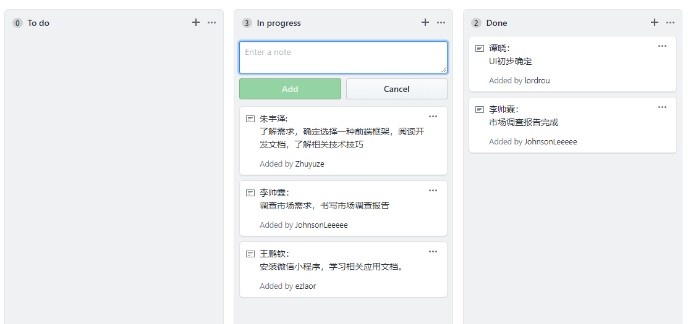
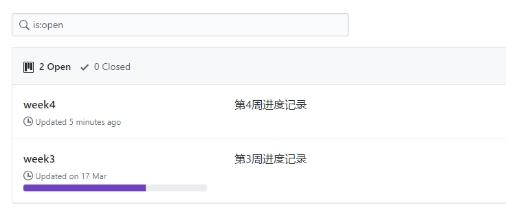
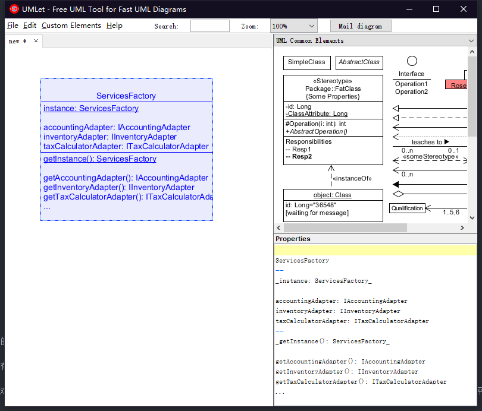

1. 简答题:
1. 用简短的语言给出对分析、设计的理解:
Analysis is the process of breaking a complex topic or substance into smaller parts in order to gain a better understanding of it.
分析是把一个复杂的问题或内容分散成较小的部分来获得更好理解的过程
Design can refer to such a plan or specification (e.g. a drawing or other document) or to the created object, etc., and features of it such as aesthetic, functional, economic or socio-political.
设计指这样一个计划或规范，或者一个被创造的对象等，它具有一些如审美性，功能性，经济性或社会-政治性的特征。
2. 用一句话描述面向对象的分析与设计的优势
An output artifact does not need to be completely developed to serve as input of object-oriented design; analysis and design may occur in parallel, and in practice the results of one activity can feed the other in a short feedback cycle through an iterative process; Both analysis and design can be performed incrementally, and the artifacts can be continuously grown instead of completely developed in one shot.
一个输出产物不需要完全发展用于面向对象; 分析与设计可以并行进行, 而且实际的迭代过程中，其中一个活动的结果可以在一个短反馈周期中完善另一个活动; 分析与设计可以一起逐渐完善, 而且产品可以持续性完善而不是一次性完全开发完成。
3. 简述 UML（统一建模语言）的作用。考试考哪些图？
UML offers a way to visualize a system's architectural blueprints in a diagram, including elements such as:
- any activities (jobs);
- individual components of the system;
- how they can interact with other software components;
- how the system will run;
- how entities interact with others (components and interfaces);
- external user interface.
UML提供一种以图来使一个系统的蓝图可视化的方式, 包括如下元素:
- 任何活动(工作);
- 系统的各自组件;
- 它们如何与软件的其他部分互动;
- 系统如何运行;
- 实例如何与其它实例互动(组件以及接口);
- 外部用户界面.
考试需求:
- 用例图：用户角度：功能、执行者
- 静态图：系统静态结构
- 类图：概念及关系
- 对象图：某种状态或时间段内，系统中活跃的对象及其关系
- 包图：描述系统的分解结构
- 行为图：系统的动态行为
- 交互图：描述对象间的消息传递
- 顺序图：强调对象间消息发送的时序
- 合作图：强调对象间的动态协作关系
- 状态图：对象的动态行为。状态-时间-状态迁移-相应动作
- 活动图：描述系统为完成某个功能而执行的操作系列
- 实现图：描述系统的组成和分布状况
- 构建图：组成部件及其关系
- 部署图：物理体系结构及与软件单元的对应关系
4. 从软件本质的角度，解释软件范围(需求)控制的可行性
由于软件的复杂性和可变性，一个需求的改变就可能引发整个软件设计的改变，因此如果不对软件的需求范围做出控制，会增加开发难度，对软件制品的质量产生负面效果，因此软件范围的控制具有必要性。
又由于软件的不可视性，难以在初次测试时检测是否满足确定真正的需求。所以软件范围的控制具有困难性。
但是在多数情况下，客户与开发者能就项目的 20% 内容给出严格的需求约定，80% 的内容都是相对模糊的。因此，围绕客户目标，发现并满足客户感兴趣的内容是最关键的。因此在需求分析与设计的过程中，对现有的需求进行评估，对需求的重要性进行评级并排序，初次迭代中开发有较大价值的需求，并对软件的增量留有足够的空间，同时围绕软件开发的成本进行调控，这样可以使得软件生产的范围，预算、工期、意外变化等在一定程度都在我们的掌控之中。
2. 项目实践
看板使用练习
可以添加条目到看板中, 向其他成员展示; 也可以看到其他成员的计划, 在做什么, 以及已完成项目


UML绘图工具练习
选例: 课本Page193
